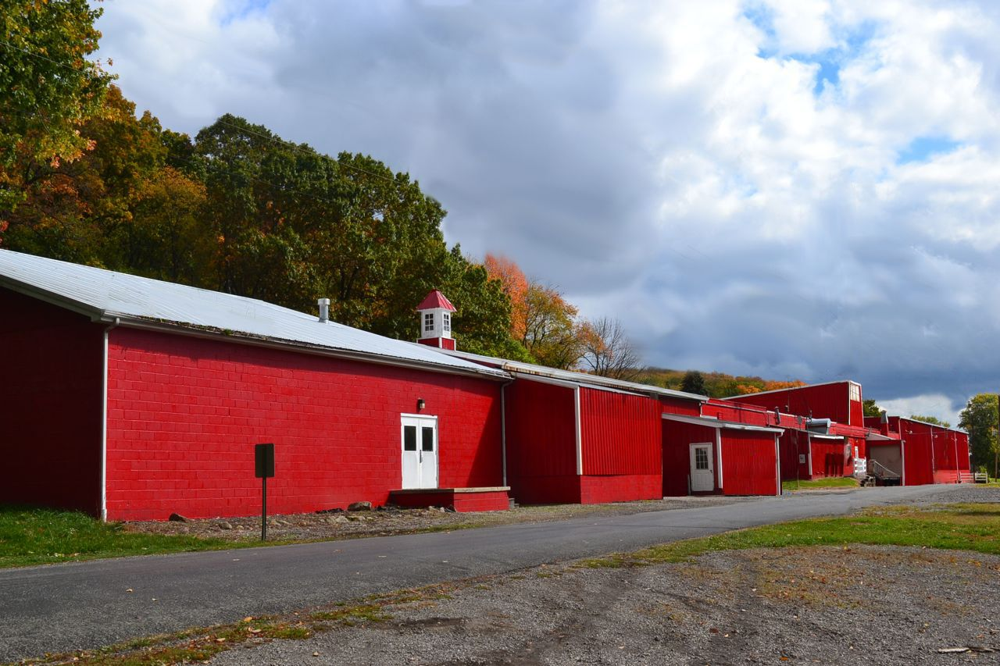
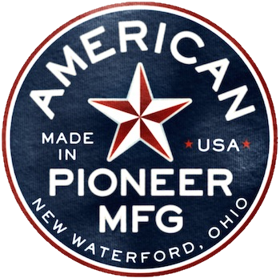

Ceramics Made in the Ohio Valley, USA

Watch APM on CBS Evening News
with Scott Pelley
info@hausenware.com
Phone. 707.591.0101
Made in Ohio Media Coverage
Short Documentary Film
NPR
New York Times
Press Democrat
Seattle Times